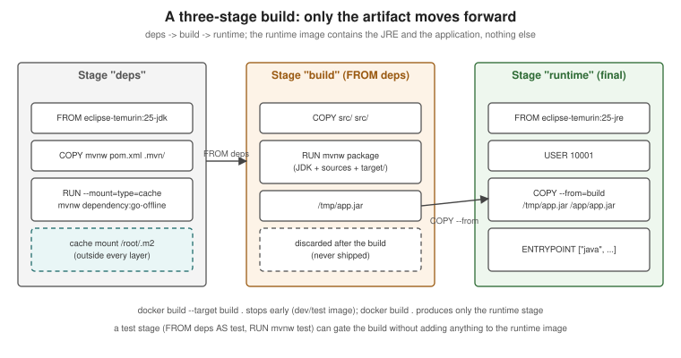

Build Cache and Multi-Stage Builds
|
This content was generated with the assistance of AI and should be verified against the official documentation before being relied on in production. |
A Dockerfile that is correct can still be slow to build and produce a bloated image. Two BuildKit features fix
both problems: the build cache, which skips any step whose inputs have not changed, and multi-stage builds, which
keep compilers, build caches and test tools out of the image that ships. This page explains both, using BuildKit
0.33.x with the docker/dockerfile:1 frontend under Docker Engine 29.8.x and Buildx 0.37.x. The instruction syntax
itself is on Dockerfile Fundamentals.
How the build cache works
Every build step is cached by a key derived from its inputs: the parent step, the instruction text and, for COPY,
ADD and RUN --mount=type=bind, a checksum of the files involved. When BuildKit reaches a step whose key matches a
cached result it reuses it; the first step whose key does not match is re-executed, and so is every step after it
in that stage, because their parent changed.
cache HIT"] --> s2["COPY pom.xml mvnw .mvn/
cache HIT (unchanged)"] s2 --> s3["RUN mvnw dependency:go-offline
cache HIT"] s3 --> s4["COPY src/ src/
cache MISS (a .java file changed)"] s4 --> s5["RUN mvnw package
re-executed"] s5 --> s6["Later steps in the stage
re-executed"] classDef hit fill:#eef7ee,stroke:#2d6a34,color:#222222 classDef miss fill:#fbeeee,stroke:#8f2a2a,color:#222222 class s1,s2,s3 hit class s4,s5,s6 miss
The rules that follow from the cache invalidation page:
-
Instruction text: changing an instruction invalidates it and everything after it.
-
Files:
COPYandADDcompare file content and metadata (not modification time). Copying the whole context withCOPY . .early means any edit anywhere — even a README — invalidates every later step. -
RUNdoes not look at the outside world:RUN apt-get updatestays cached for months unless an earlier layer changes; the cache key is only the command string. Use--no-cacheor--no-cache-filter <stage>to force it. -
Build arguments: an
ARGwhose value changes invalidates the first step that uses it;SOURCE_DATE_EPOCHinvalidates fromWORKDIRonwards. -
Secrets are not part of the cache key — changing a secret value does not re-run the step that used it.
Ordering for cache hits
Order instructions from least to most frequently changed. For a Maven project that means: base image, build tool files, dependency resolution, and only then the sources.
# syntax=docker/dockerfile:1
FROM eclipse-temurin:25-jdk AS build
WORKDIR /src
# 1. Rarely changes: the wrapper and the POM
COPY mvnw pom.xml ./
COPY .mvn/ .mvn/
# 2. Changes when dependencies change: resolve them into the cache mount
RUN --mount=type=cache,target=/root/.m2 ./mvnw -B -ntp dependency:go-offline
# 3. Changes on every commit: the sources
COPY src/ src/
RUN --mount=type=cache,target=/root/.m2 ./mvnw -B -ntp package -DskipTestsDerived from Optimize cache usage in builds.
RUN --mount: caches, bind mounts, secrets, SSH and tmpfs
Mounts attach something to a single RUN step without leaving it in a layer.
Cache mounts
A cache mount is a directory that persists across builds on the same builder. Package managers keep their download
caches there, so even when the layer cache misses (for example because pom.xml changed), only the new
dependencies are downloaded. This complete Dockerfile caches both the apt packages it installs and the Maven
repository:
# syntax=docker/dockerfile:1
FROM eclipse-temurin:25-jdk AS build
# apt: disable the image's docker-clean hook so downloaded packages stay in the cache mount
RUN rm -f /etc/apt/apt.conf.d/docker-clean; \
echo 'Binary::apt::APT::Keep-Downloaded-Packages "true";' > /etc/apt/apt.conf.d/keep-cache
# sharing=locked serialises concurrent builds writing the same apt cache
RUN --mount=type=cache,target=/var/cache/apt,sharing=locked \
--mount=type=cache,target=/var/lib/apt,sharing=locked \
apt-get update && apt-get install -y --no-install-recommends git
WORKDIR /src
COPY . .
# Maven: the local repository persists across builds
RUN --mount=type=cache,target=/root/.m2 ./mvnw -B -ntp package -DskipTestsOther build tools follow the same pattern with their own cache directory, for example
--mount=type=cache,target=/root/.gradle for Gradle or --mount=type=cache,target=/root/.npm,sharing=locked in
front of npm ci. Options: id (defaults to the target path), sharing=shared|private|locked, from/source to
seed it, and mode/uid/gid for a non-root build user. Cache mounts are local to a builder: an ephemeral CI
runner starts empty unless the builder cache is exported (see
BuildKit and Buildx).
Derived from RUN --mount=type=cache (including
its "cache apt packages" example).
Bind mounts
A bind mount uses files from the context (or another stage) for one step without copying them into a layer. It is
read-only by default; add rw when the step writes next to the sources, knowing that those writes are discarded
when the step ends — so copy anything you need to keep to a path outside the mount:
# syntax=docker/dockerfile:1
FROM eclipse-temurin:25-jdk AS build
WORKDIR /src
RUN --mount=type=bind,target=.,rw \
--mount=type=cache,target=/root/.m2 \
./mvnw -B -ntp package -DskipTests \
&& cp target/*.jar /tmp/app.jarDerived from RUN --mount=type=bind.
Secret mounts
A secret — here a Maven settings.xml with repository credentials — is readable only during the step that
mounts it:
# syntax=docker/dockerfile:1
FROM eclipse-temurin:25-jdk AS build
WORKDIR /src
COPY . .
RUN --mount=type=secret,id=maven-settings,target=/root/.m2/settings.xml,required=true \
--mount=type=cache,target=/root/.m2/repository \
./mvnw -B -ntp package -DskipTestsdocker build --secret id=maven-settings,src=$HOME/.m2/settings.xml -t orders:build .Derived from RUN --mount=type=secret and
Build secrets. A secret mounted this way is not written to any
layer and does not appear in docker history; see
Image Best Practices and Supply-Chain Security.
SSH mounts
An SSH mount forwards the host’s SSH agent, for example to clone a private repository. The image needs an SSH
client and git, and the server’s host key must be in known_hosts before the clone:
# syntax=docker/dockerfile:1
FROM eclipse-temurin:25-jdk AS private-lib
RUN apt-get update \
&& apt-get install -y --no-install-recommends git openssh-client \
&& rm -rf /var/lib/apt/lists/*
RUN mkdir -p -m 0700 ~/.ssh && ssh-keyscan github.com >> ~/.ssh/known_hosts
RUN --mount=type=ssh git clone git@github.com:myorg/private-lib.git /src/private-libeval $(ssh-agent)
ssh-add ~/.ssh/id_ed25519
docker build --ssh default .Derived from RUN --mount=type=ssh (its "access
to GitLab" example, adapted to GitHub and git clone).
tmpfs mounts
A tmpfs mount is scratch space in memory that never touches disk or a layer:
# syntax=docker/dockerfile:1
FROM eclipse-temurin:25-jdk AS build
WORKDIR /src
COPY . .
RUN --mount=type=tmpfs,target=/tmp/work \
--mount=type=cache,target=/root/.m2 \
MAVEN_OPTS=-Djava.io.tmpdir=/tmp/work ./mvnw -B -ntp verify -DskipTestsDerived from RUN --mount=type=tmpfs.
Multi-stage builds
A multi-stage Dockerfile has several FROM lines. Each starts a new stage with a fresh filesystem, and only the
last stage (or the one selected with --target) becomes the image. Later stages copy just the artifacts they need
from earlier ones with COPY --from=<stage>, so compilers, sources and caches never reach the final image.
Multi-stage builds arrived in Docker 17.05 and are not covered by the 2015 books.

The main techniques:
-
Named stages —
FROM eclipse-temurin:25-jdk AS build, thenCOPY --from=build /src/target/app.jar /app/. -
Selecting a stage —
docker build --target build .builds up tobuildand stops; handy for a development image or for running tests. -
External images as stages —
COPY --from=busybox:1.37-musl /bin/wget /usr/local/bin/wgetcopies a file out of any image without making it a stage. -
Parallel and skipped stages — BuildKit builds independent stages concurrently and skips stages the target does not depend on.
-
A test stage — a stage that runs the tests, selected in CI with
--target test, keeps the runtime image free of test dependencies while still failing the build on a red test.
Derived from Multi-stage builds.
A complete Java example
# syntax=docker/dockerfile:1
# ---- deps: resolve dependencies once, reuse across source changes
FROM eclipse-temurin:25-jdk AS deps
WORKDIR /src
COPY mvnw pom.xml ./
COPY .mvn/ .mvn/
RUN --mount=type=cache,target=/root/.m2 ./mvnw -B -ntp dependency:go-offline
# ---- build: compile and package
FROM deps AS build
COPY src/ src/
RUN --mount=type=cache,target=/root/.m2 ./mvnw -B -ntp package -DskipTests \
&& cp target/*.jar /tmp/app.jar
# ---- test: run the unit tests (docker build --target test .)
FROM deps AS test
COPY src/ src/
RUN --mount=type=cache,target=/root/.m2 ./mvnw -B -ntp test
# ---- runtime: JRE only, non-root
FROM eclipse-temurin:25-jre AS runtime
RUN groupadd --system --gid 10001 app && useradd --system --uid 10001 --gid app --no-create-home app
WORKDIR /app
COPY --from=build --chown=10001:10001 /tmp/app.jar /app/app.jar
USER 10001:10001
EXPOSE 8080
ENTRYPOINT ["java", "-XX:MaxRAMPercentage=75", "-jar", "/app/app.jar"]docker build --target test . # fails the build if a unit test fails
docker build -t orders-service:1.4.0 . # the runtime stage (last one) is the image
docker image ls orders-service:1.4.0 # a JRE base plus one application layerDerived from Multi-stage builds and Java language-specific guide: Containerize a Java application. The Spring Boot version, which splits the JAR into dependency and application layers so a code change re-ships only a few kilobytes, is on Java and Spring Boot Images.
For the Node.js equivalent of this multi-stage Dockerfile, see Docker & Containers in the Node.js section.
Choosing a base image
The base image decides the image’s size, its CVE backlog, which C library your native code links against and whether there is a shell to debug with. Options, from most to least batteries-included:
| Base | Examples | Strengths | Trade-offs |
|---|---|---|---|
Ubuntu / Debian |
|
Familiar tooling, glibc, wide package availability |
Larger; more packages mean more CVEs to triage |
Debian slim |
|
glibc with far fewer packages |
Some tools must be installed explicitly |
Alpine |
|
Very small; |
musl instead of glibc — native libraries and DNS resolution behave differently; some JDK builds and native dependencies are glibc-only |
Distroless |
Google’s distroless Java images ( |
No shell or package manager; tiny attack surface |
Debugging needs |
Docker Hardened Images |
|
Minimal, distroless-style runtime variants with |
Requires |
|
|
Empty — for static binaries only |
No libc, no CA certificates, no users unless you add them |
Prefer Docker Official Images or a Verified
Publisher for anything you do not build yourself, pin the tag you depend on, and let a bot such as Dependabot or
Renovate propose updates. Derived from Base images and
Docker Hardened Images. For DHI, the documented Java migration uses a -dev Maven
image for the build stage and a runtime JRE image for the final stage:
# syntax=docker/dockerfile:1
FROM dhi.io/maven:3-jdk21-alpine3.22-dev AS builder
WORKDIR /app
COPY . ./
RUN mvn -B package -DskipTests
FROM dhi.io/eclipse-temurin:21-alpine3.22
WORKDIR /app
COPY --from=builder /app/target/app.jar /app/app.jar
ENTRYPOINT ["java", "-jar", "/app/app.jar"]Derived verbatim from Java migration example; pick the Java 25 tags from the DHI catalog for a Java 25 service.
Managing the build cache
docker buildx du # what the builder cache holds
docker builder prune # remove dangling build cache
docker builder prune --all --filter until=72h # everything unused for three daysDerived from Build garbage collection, which also shows how to cap the cache size in the builder configuration.